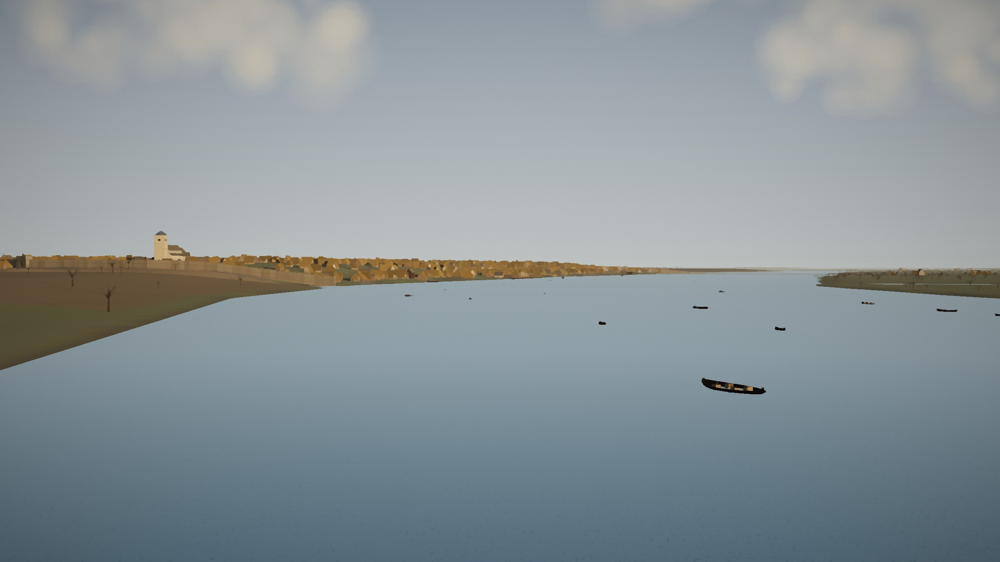
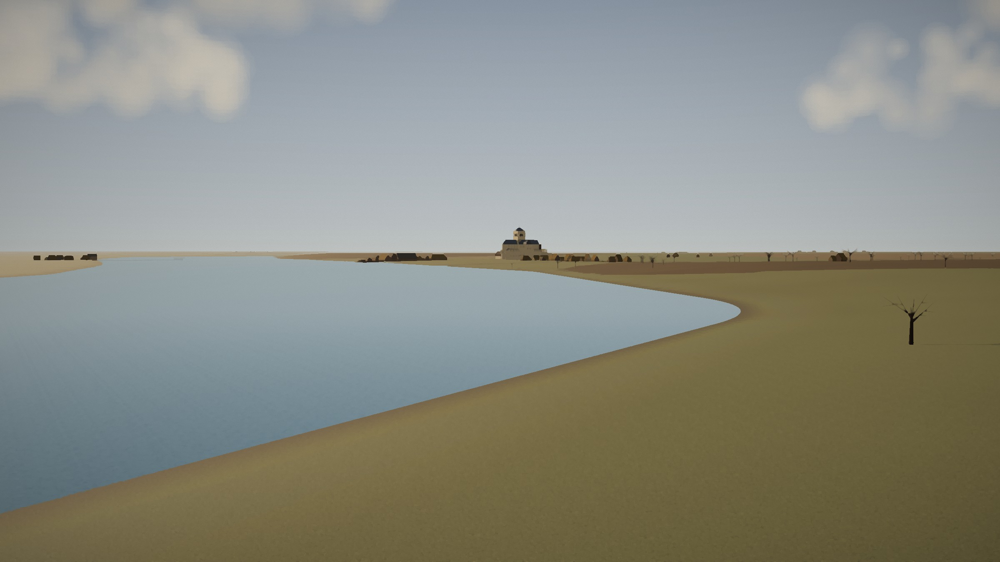
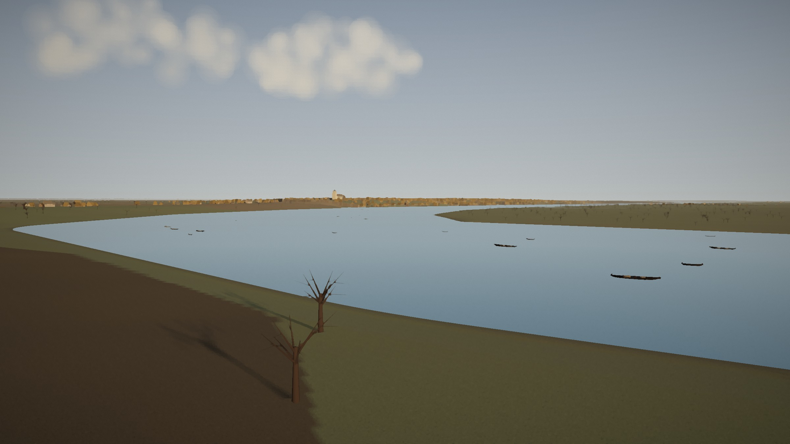
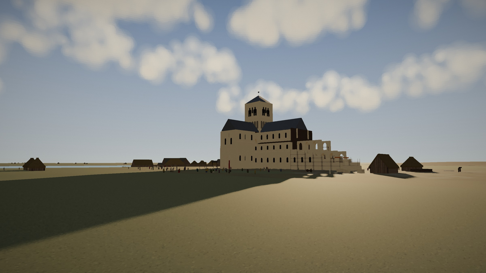
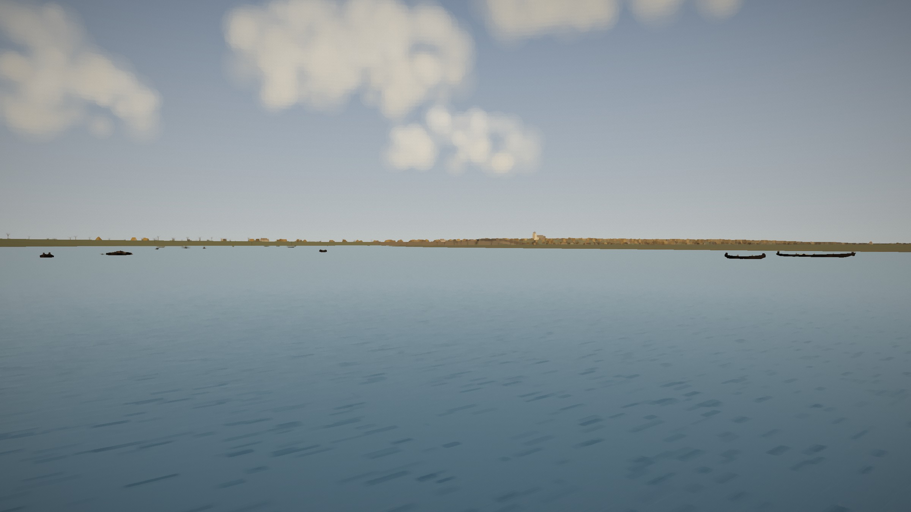

Canaletto's London, in 1066
Canaletto painted London from the river and its terraces in 1746-1755. These are the same viewpoints seven centuries earlier, in December 1066, rendered from the London 1066 reconstruction, lit as he lit his views and given a painted finish. What stands in them follows the reconstruction: known where it is known, inferred or typical where it is not. The clear sky is painter's licence: the weather of those days is not recorded.

Where Canaletto saw Wren's St Paul's and fifty spires, in 1066 the Strand shore is open fields; downriver the walled City lies low on its two hills, thatched roofs crowded inside the Roman wall, with the tower of Saxon St Paul's on Ludgate Hill. Boats and barges on a river much wider than today's; Southwark's marshes on the right.

Upriver round the bend: Edward the Confessor's new abbey on Thorney Island, consecrated a year before, its crossing tower above the little vill of Westminster; Lambeth across the water. No Westminster Bridge, no Westminster Hall: only fields, marsh and the river.

From the high ground by Whitehall, down the river to the distant City and St Paul's; the Lambeth marsh opposite; boats on the reach.

Christmas morning 1066: the crowd gathers by the abbey as William's procession comes to the north door. The nave's western bays still stand in scaffolding (most historians think it was finished only in the 1080s); the masons' yard is beyond.

On the water by Westminster on a market day, looking downstream: barges and rowing boats on the wide, shallow river, the Strand shore on the left and the City far off.
Rendered with three.js; a smoothing filter (Kuwahara), colour grading, a canvas weave and a vignette give the painted finish. Script: render_views.js.